Crédit : Max Ducourneau sur Unsplash
Prédire la taille des poissons par régression : analyse exploratoire des données (1/2)
Introduction
Traditionnellement, le point de départ d'un projet de science des données est la découverte de ces dernières. Des structures de données très pratiques existent, comme par exemple les DataFrames de la librairie Pandas. On peut ainsi obtenir rapidement des premières statistiques empiriques sur les données de travail, et se faire un premier aperçu des traitements à appliquer (par ex. : détection de données manquantes, features avec des distributions asymétriques ou points extrêmes, "outliers").
Aujourd'hui, nous étudierons des données caractérisant des spécimens de poissons sur un marché. Elles ont été publiées sur Kaggle (https://www.kaggle.com/aungpyaeap/fish-market) par Aung Pyae.
Lecture des données, premières statistiques
Nous travaillerons avec les librairies courantes :
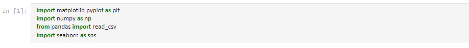
Après avoir chargé les données avec Pandas, le premier réflexe est souvent d'afficher les premières lignes avec la méthode head du DataFrame :
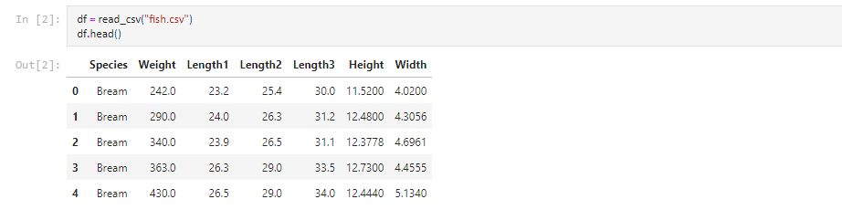
Nous sommes donc en présence d'une variable à expliquer, dite "cible/target" (Weight, la masse), et de 5 variables explicatives (l'espèce, trois longueurs, la hauteur et l'épaisseur), dites "features". À l'exception de l'espèce, toutes sont numériques. On peut regarder les grandeurs statistiques des distributions avec la méthode describe :
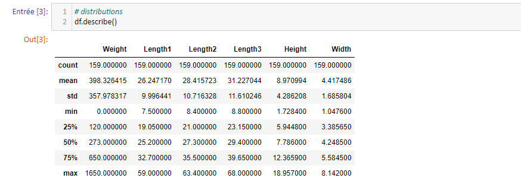
Les moyennes et écart-types peuvent être analysées à la lumière d'une grandeur adimensionnée, plus parlante, le coefficient de variation. Il est défini comme :
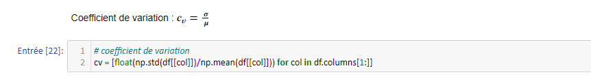
Dans l'ordre des colonnes (mis à part la colonne catégorique, espèces), nous obtenons : [0.9, 0.38, 0.38, 0.37, 0.48, 0.38]. La cible possède donc une distribution beaucoup plus éparpillée que les variables explicatives.
On remarque également que la masse s'annule (voir min) : une donnée (au moins) manque donc. Il s'agit de la supprimer. Pour le faire le plus facilement possible, NumPy possède des masques. Le principe est simple : à partir d'une condition booléenne (True/False), une colonne est passée au peigne fin et toutes les lignes (individus) pour lesquelles l'attribut de la colonne ne respecte pas la condition sortent du lot. On peut ensuite passer le masque à la fonction numpy.where qui affiche NaN sur les lignes à supprimer. Il ne reste plus qu'à appliquer une méthode de suppression :
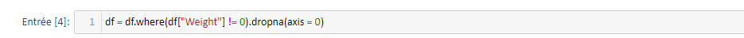
Représentations graphiques
Passons ensuite à la visualisation. C'est une façon rapide et intuitive de repérer les corrélations et liens entre les variables du jeu de données. La première chose à faire est de charger les features dans des variables séparées :
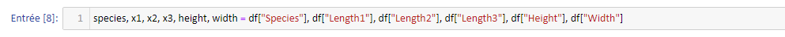
Intéressons-nous à la relation masse/côtes (les côtes sont des prises de mesure caractérisant des poissons : longueur droite, diagonale et section) :
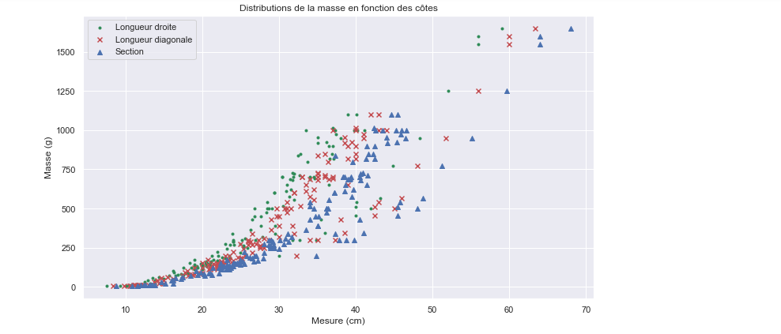
L'abcisse correspond à une mesure en cm.
On semble déceler une corrélation entre ces trois features. En effet, la distribution de masse semble suivre la même tendance pour chacune d'elle avec une translation vers les abcisses croissantes. Qu'en est-il pour les autres variables ?
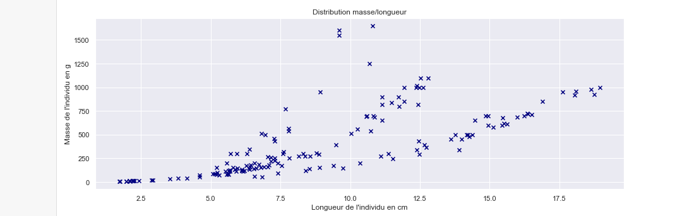
Un modèle polynomial conviendrait sur chacune des trois "branches". On peut se demander d'où viennent ces tendances si bien distinctes. La piste d'espèces différentes est envisageable : une variable catégorique peut souvent expliquer des comportements "définis par blocs" dans les données. Nous allons voir que c'est effectivement le cas ici. Il faut pour cela regarder les distributions marginales selon les espèces. Utilisons encore la fonction scatter de Matplotlib :
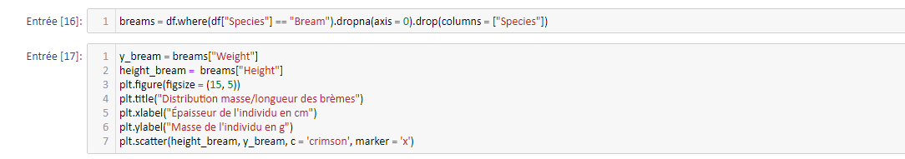
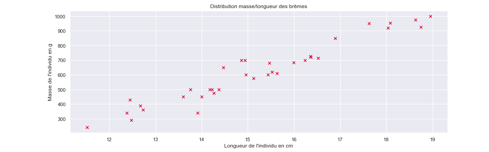
Ces points sont en grande partie issus de la branche du bas du graphe précédent ! Et une relation linéaire semblerait convenir. Nous avons donc eu raison (au moins pour cette espèce) de séparer les données. Se pourrait-il que le problème d'estimation soit résolu par une simple régression linéaire sur la longueur mesurée pour chacune des espèces ? Représentons les données masse/longueur mesurée en séparant chaque espèce :
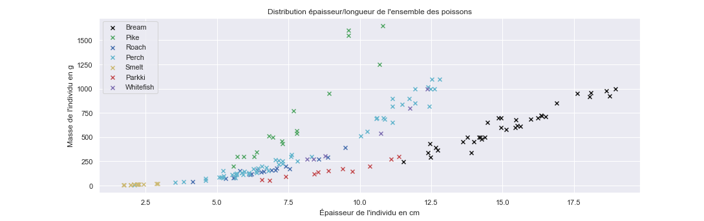
Et bien oui ! Ou plutôt, oui pour certaines espèces. Pour d'autres toutefois, il faudra utiliser un modèle plus complexe. Pour les "Pike" (brochets) par exemple, un modèle polynomial d'ordre 2 ou 3 pourrait mieux expliquer les données. Une bonne visualisation aura déjà, à ce stade, permis de résoudre une bonne partie du problème (alors que la distribution non-catégorisée par les espèces apparait complexe).
On observe également que les données ne sont pas équitablement réparties : certaines espèces (violet, jaune) sont sous-représentées quand d'autres (noir, vert) sont présentes en plus grande quantité. C'est un problème pour la robustesse des modèles catégoriques : difficile de se reposer sur un modèle avec 3 paramètres ou plus quand l'ensemble des données disponibles ne possède pas un cardinal significativement plus grand.
On peut enfin obtenir un graphe analogue pour la distribution masse/largeur :
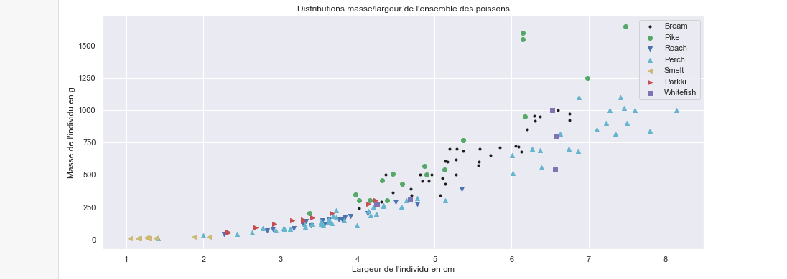
Les mêmes commentaires s'appliquent. Nous allons en effet voir maintenant que les features sont fortement corrélées et n'apportent pas d'informations supplémentaires entre elles. Pour cela, on utilise la matrice de corrélation des features, disponibles sous NumPy avec la méthode corr :
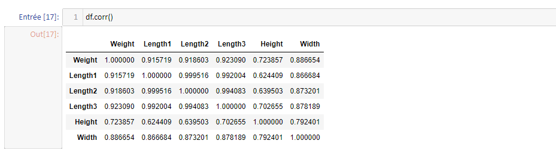
On remarque directement que toutes les variables explicatives sont fortement corrélées. "Length1" semble être la feature la plus corrélée avec la cible, on pourra ainsi l'utiliser préférentiellement pour le modèle de régression.
Pour conclure cet article, une autre méthode (moins explicite mais plus visuelle) de se représenter les liens entre variables homogènes comme ici (mais pas forcément les corrélations !) est de représenter la distribution des écarts absolus par paire de variables, comme proposé ici pour Length1 et 2 :
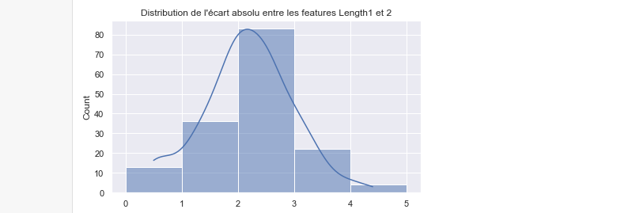
Notons enfin qu'il existe la fonction pairplot de Seaborn pour représenter les graphes de variations par paire (l'argument "kde" permet d'obtenir une densité plutôt qu'un histogramme sur la diagonale:
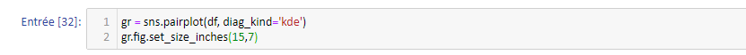
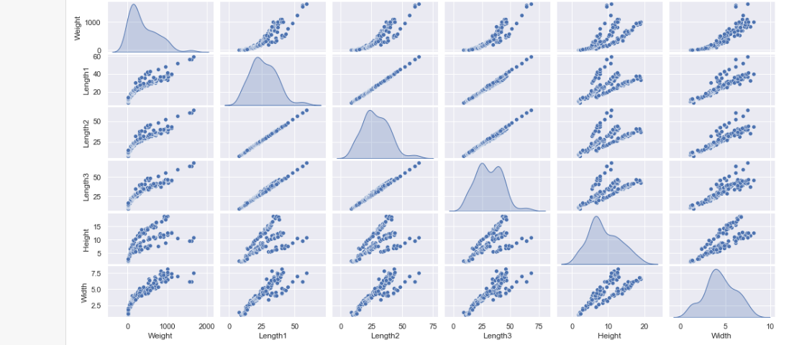
On note de belles corrélations linéaires ! Le dataset est artificiel, dans la pratique de tels résultats relèveraient du miracle.
Le prochain article traitera des modèles de régression (linéaire, polynomiale, multiple) appliqués sur ces données !